Ogni contributo verifica fonti primarie e indica cosa cambia per il destinatario. Mai marketing, mai pareri travestiti.
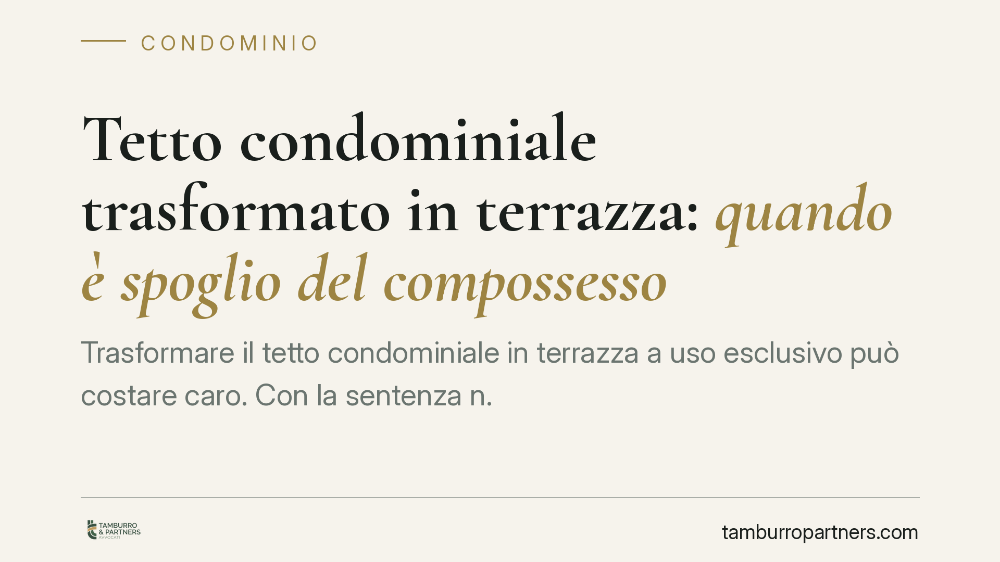
Trasformare il tetto condominiale in terrazza a uso esclusivo può costare caro. Con la sentenza n. 15515/2026 la Cassazione conferma che l'operazione integra spoglio del compossess…
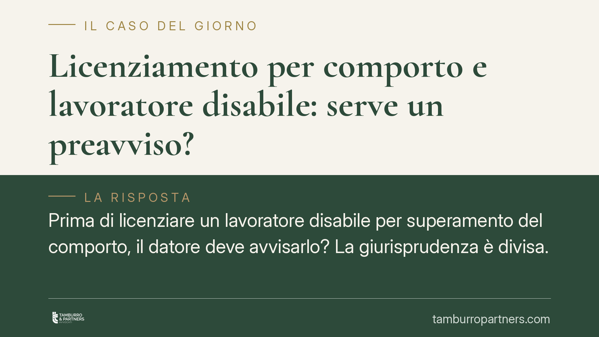
Prima di licenziare un lavoratore disabile per superamento del comporto, il datore deve avvisarlo? La giurisprudenza è divisa. Alcuni tribunali leggono l'avviso come accomodamento …
I permessi ex art. 33 della Legge 104/1992 sono uno strumento essenziale per chi assiste un familiare con disabilità grave. Ma le regole su quanti giorni spettano e a chi sono spes…
La condivisione automatica tipica dei software peer to peer può trasformare il semplice download di materiale pedopornografico in una condotta di diffusione, molto più grave. Una r…
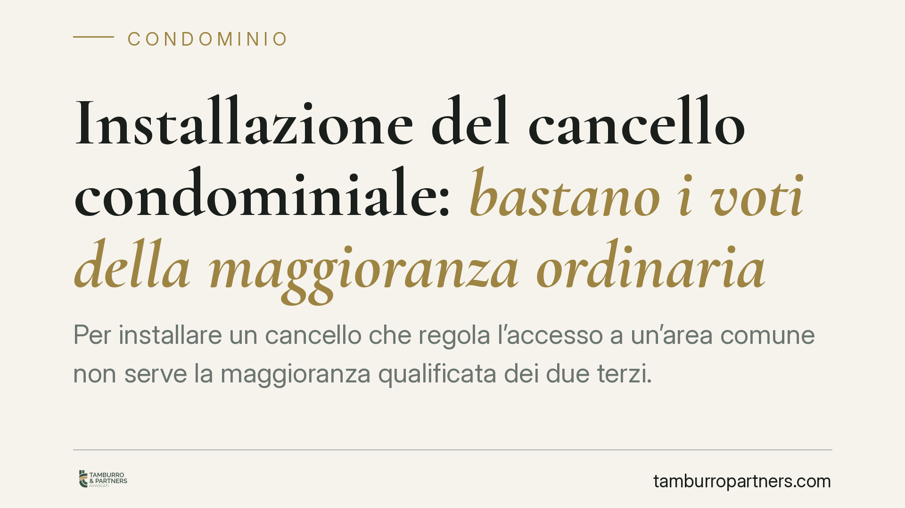
Per installare un cancello che regola l'accesso a un'area comune non serve la maggioranza qualificata dei due terzi. La Cassazione conferma che si tratta di un intervento di ordina…
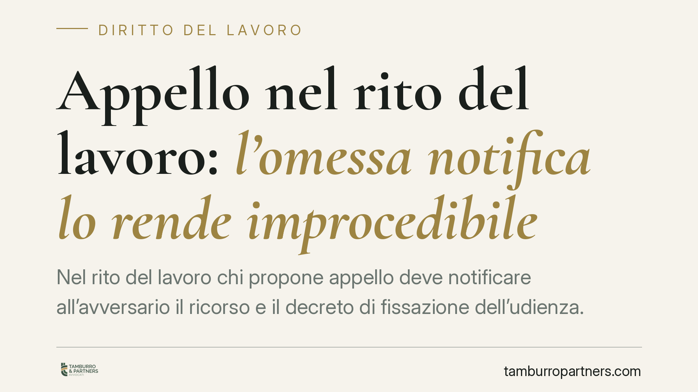
Nel rito del lavoro chi propone appello deve notificare all'avversario il ricorso e il decreto di fissazione dell'udienza. La Cassazione ribadisce un principio severo: se la notifi…
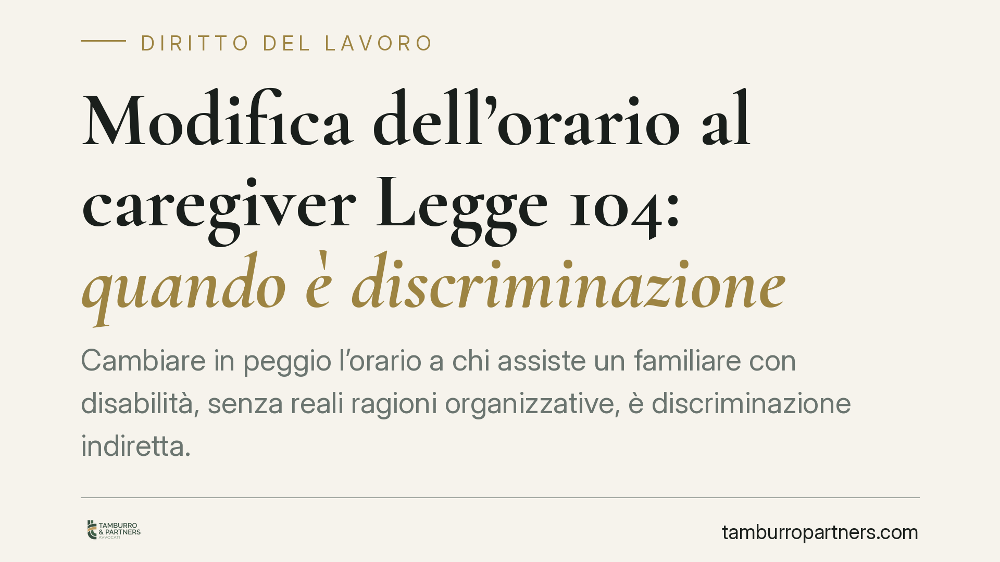
Cambiare in peggio l'orario a chi assiste un familiare con disabilità, senza reali ragioni organizzative, è discriminazione indiretta. Lo ha stabilito il Tribunale di Treviso, che …
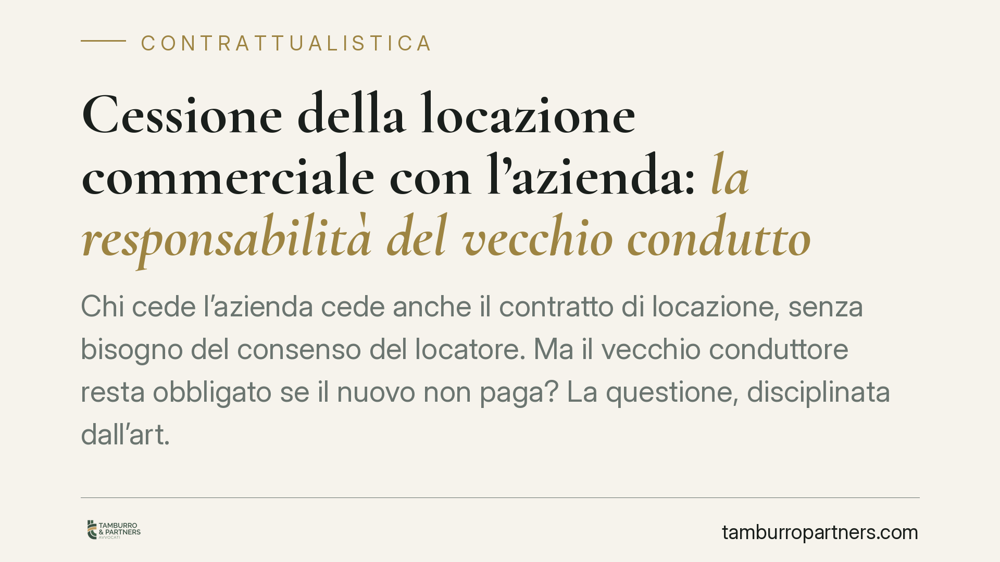
Chi cede l'azienda cede anche il contratto di locazione, senza bisogno del consenso del locatore. Ma il vecchio conduttore resta obbligato se il nuovo non paga? La questione, disci…
Il reato di sfruttamento del lavoro previsto dall'art. 603-bis c.p. torna al centro dell'attenzione giurisprudenziale. Il punto controverso riguarda l'elemento soggettivo: quanta c…
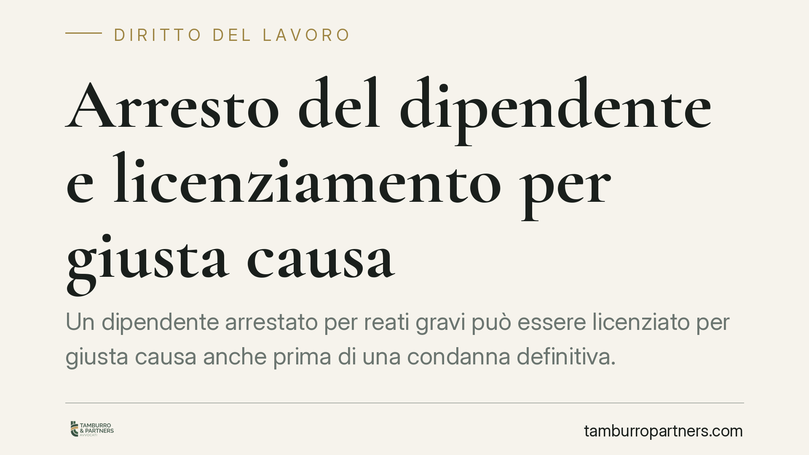
Un dipendente arrestato per reati gravi può essere licenziato per giusta causa anche prima di una condanna definitiva. Una recente pronuncia di merito ribadisce l'autonomia tra pro…
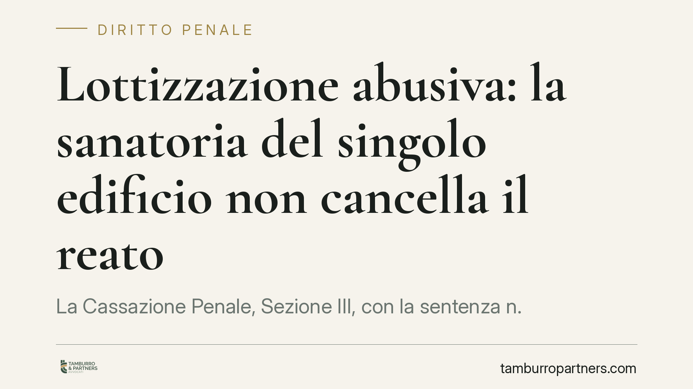
La Cassazione Penale, Sezione III, con la sentenza n. 27220/2026, chiarisce un punto delicato: ottenere il permesso di costruire in sanatoria per un singolo manufatto non cancella …
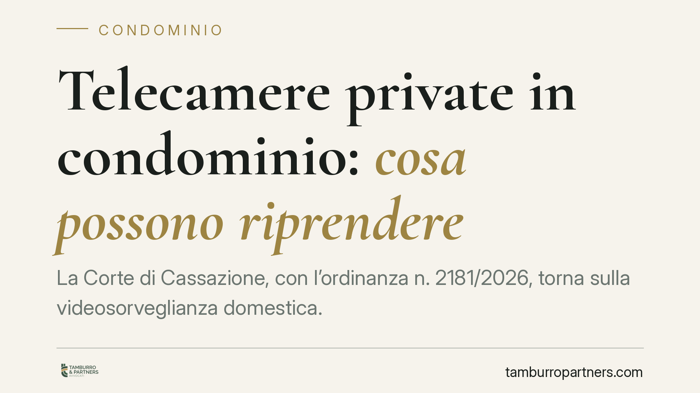
La Corte di Cassazione, con l'ordinanza n. 2181/2026, torna sulla videosorveglianza domestica. Il singolo condòmino può installare una telecamera senza consenso degli altri né deli…
Il dispositivo elettronico contiene oggi l'intera vita di una persona. Per questo la Cassazione ha ridefinito i confini del sequestro probatorio di computer e smartphone, imponendo…
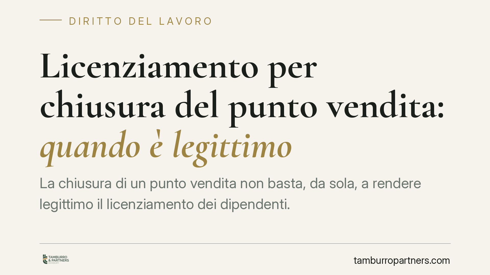
La chiusura di un punto vendita non basta, da sola, a rendere legittimo il licenziamento dei dipendenti. La Cassazione richiede la prova di una reale ragione organizzativa, il risp…
Quando il datore di lavoro non versa i contributi e il credito si prescrive, il lavoratore rischia di perdere quote di pensione. La legge prevede un rimedio: la rendita vitalizia a…
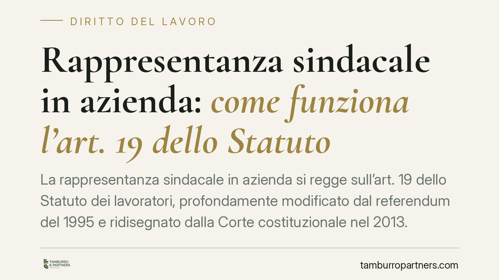
La rappresentanza sindacale in azienda si regge sull'art. 19 dello Statuto dei lavoratori, profondamente modificato dal referendum del 1995 e ridisegnato dalla Corte costituzionale…
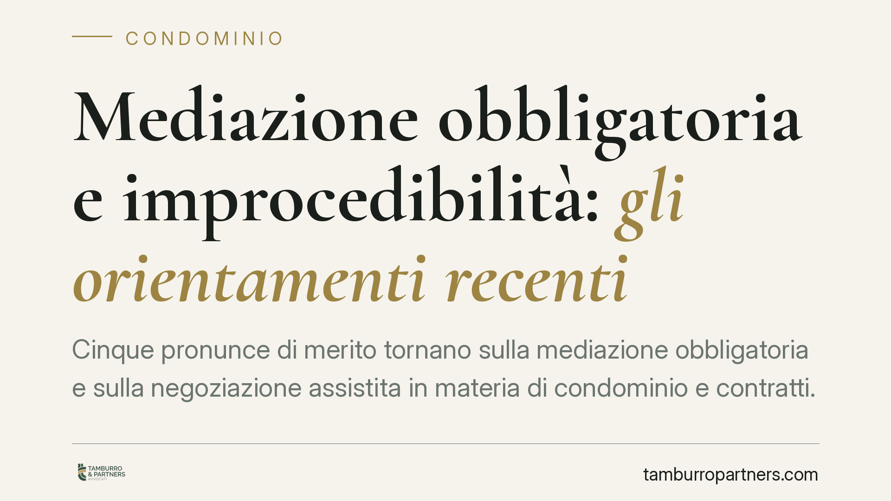
Cinque pronunce di merito tornano sulla mediazione obbligatoria e sulla negoziazione assistita in materia di condominio e contratti. I giudici chiariscono cosa accade quando si sba…
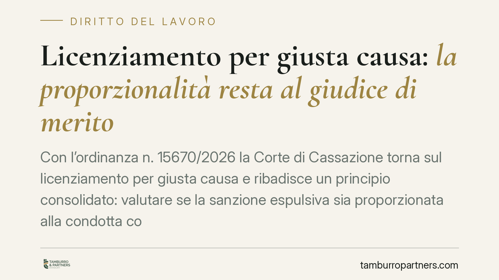
Con l'ordinanza n. 15670/2026 la Corte di Cassazione torna sul licenziamento per giusta causa e ribadisce un principio consolidato: valutare se la sanzione espulsiva sia proporzion…
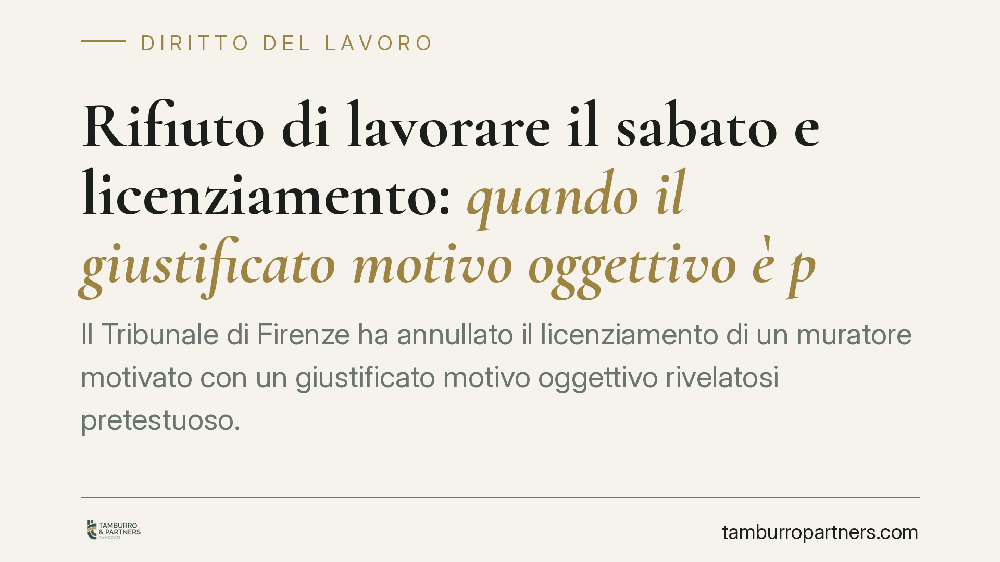
Il Tribunale di Firenze ha annullato il licenziamento di un muratore motivato con un giustificato motivo oggettivo rivelatosi pretestuoso. Mancavano le prove documentali della cris…
Cambiare azienda non è solo un passaggio contrattuale: incide anche sulla destinazione del TFR maturando. Se al momento dell'assunzione il lavoratore non compila il modulo di scelt…
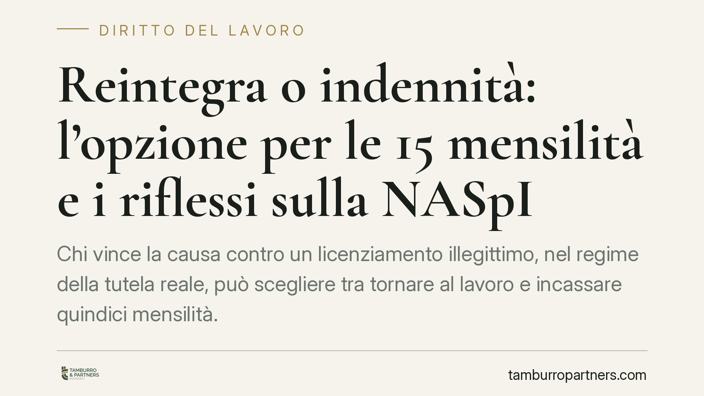
Chi vince la causa contro un licenziamento illegittimo, nel regime della tutela reale, può scegliere tra tornare al lavoro e incassare quindici mensilità. Ma questa opzione può inc…
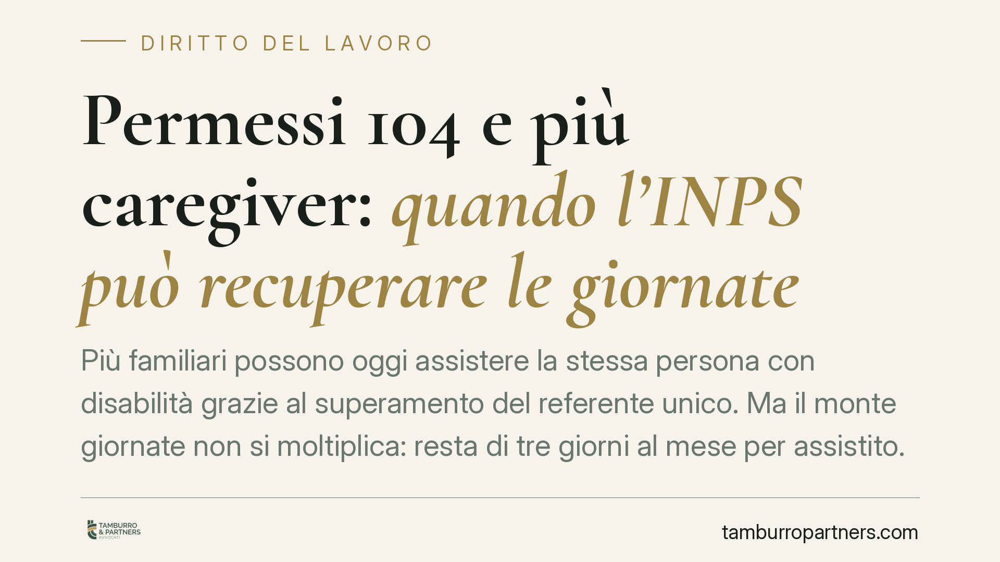
Più familiari possono oggi assistere la stessa persona con disabilità grazie al superamento del referente unico. Ma il monte giornate non si moltiplica: resta di tre giorni al mese…
Il termine per impugnare una delibera condominiale è di trenta giorni, ma il conteggio nasconde più insidie di quanto sembri. Decorrenza differenziata tra presenti e assenti, sospe…
Il rendiconto è l'obbligo centrale dell'amministratore di condominio. La sua presentazione oltre il termine di 180 giorni dalla chiusura dell'esercizio può integrare una grave irre…
Un pensionato può tornare a lavorare, ma le regole cambiano a seconda del canale di uscita. Alcuni trattamenti sono pienamente cumulabili con nuovi redditi, altri prevedono divieti…
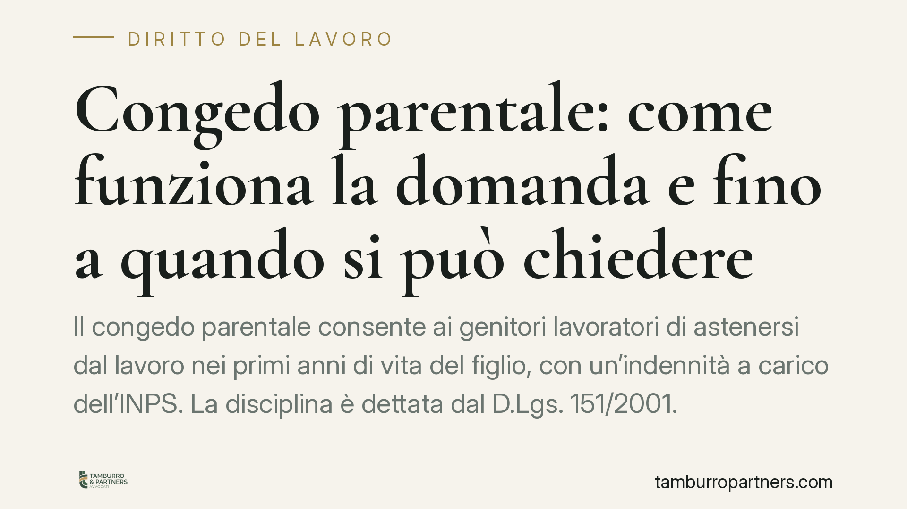
Il congedo parentale consente ai genitori lavoratori di astenersi dal lavoro nei primi anni di vita del figlio, con un'indennità a carico dell'INPS. La disciplina è dettata dal D.L…
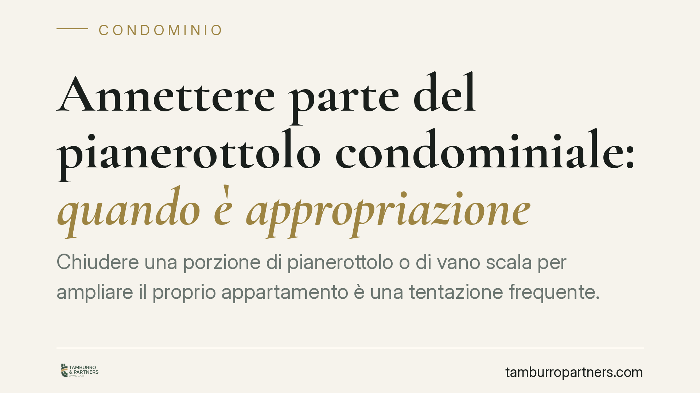
Chiudere una porzione di pianerottolo o di vano scala per ampliare il proprio appartamento è una tentazione frequente. Ma il confine tra uso legittimo del bene comune e appropriazi…
La terrazza a livello ha una doppia natura: è bene privato e, insieme, copre le unità sottostanti. La giurisprudenza di legittimità distingue la porzione che funge da copertura, ri…
Alla fine di un matrimonio, chi resta nell'alloggio condominiale assegnato al portiere? Una recente pronuncia di merito ribadisce un principio netto: quell'immobile è un bene di se…
Un tema torna al centro del contenzioso sindacale: gli obblighi di informazione e consultazione delle rappresentanze dei lavoratori nascono direttamente dalla legge, e non solo dal…